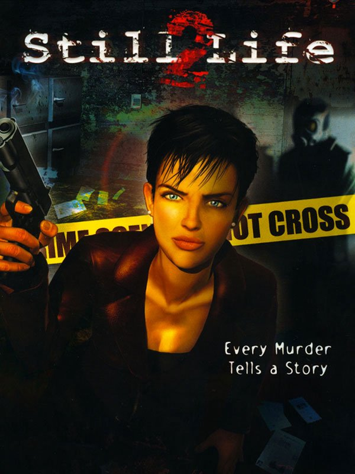

Still Life 2
Still Life 2
Details
|  | |
| Playtime | 11h 18m 0s |
| Last Activity | 14.3.2020 19:48:58 |
| Added | 14.4.2021 19:48:45 |
| Modified | 01.5.2021 13:12:04 |
| Completion Status | Played |
| Source | Steam |
| Platform | PC |
| Release Date | 01.6.2011 |
| Community Score | 47 |
| Critic Score | 67 |
| User Score | |
| Genre | Adventure |
| Developer | Microids |
| Publisher | Microids |
| Feature | Single-Player |
| Links | Community Hub Discussions Guides News Store Page PCGamingWiki |
Description
Who is hiding behind Mr. X? Still Life 2 reveals the long-awaited ending of Still Life and spells a new investigation for Agent Victoria McPherson.
In Fall 2008, Victoria is sent to Maine where Ellen Dunnigan's body has just been found. The modus operandi and the video sent to the police and press leave them in no doubt as to the killer's identity: the East Coast Torturer has struck again! No clues are picked up during the autopsy, as the serial killer painstakingly washed the body. Once again, the killer has not committed any errors.
From her motel room, Victoria comes across a report by Paloma Hernandez, the journalist covering all the crimes bearing the East Coast Torturer's signature. Hernandez has been highly critical of the FBI's and Victoria's lack of progress. That does not stop Hernandez from phoning and asking Victoria to meet her later that evening. Hernandez claims to have some so-called clues on the killer in her possession. Victoria flatly refuses. Just moments later, Paloma is kidnapped by the Torturer…
Still Life 2 remains true to the spirit of its first installment, but now allows you to play and manage two characters bound by the same fate. This time, the aim is to control two heroines, see the game from two complementary viewpoints and experience two different gameplays. Depending on whether you are playing Paloma Hernandez, the victim being hunted by the killer or Victoria McPherson, the FBI agent tracking him down, you can alternate between survival and investigation.
In Fall 2008, Victoria is sent to Maine where Ellen Dunnigan's body has just been found. The modus operandi and the video sent to the police and press leave them in no doubt as to the killer's identity: the East Coast Torturer has struck again! No clues are picked up during the autopsy, as the serial killer painstakingly washed the body. Once again, the killer has not committed any errors.
From her motel room, Victoria comes across a report by Paloma Hernandez, the journalist covering all the crimes bearing the East Coast Torturer's signature. Hernandez has been highly critical of the FBI's and Victoria's lack of progress. That does not stop Hernandez from phoning and asking Victoria to meet her later that evening. Hernandez claims to have some so-called clues on the killer in her possession. Victoria flatly refuses. Just moments later, Paloma is kidnapped by the Torturer…
Still Life 2 remains true to the spirit of its first installment, but now allows you to play and manage two characters bound by the same fate. This time, the aim is to control two heroines, see the game from two complementary viewpoints and experience two different gameplays. Depending on whether you are playing Paloma Hernandez, the victim being hunted by the killer or Victoria McPherson, the FBI agent tracking him down, you can alternate between survival and investigation.